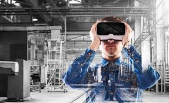
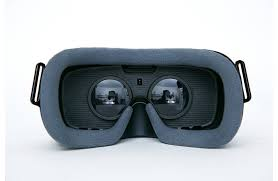
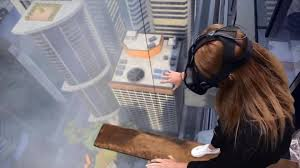

La Realidad Virtual (RV) describe al conjunto de tecnologías inmersivas que buscan posicionar al usuario dentro de entornos virtuales simulados por ordenador. Dependiendo del objetivo que se pretenda alcanzar con las simulaciones, es posible que las imágenes sean realistas o no. Para llevarse a cabo, la RV hace uso de dispositivos llamados lentes o cascos de realidad virtual. Estos hacen posible que los usuarios perciban escenarios en 360° con alta definición.
La incorporación de audio y sensores de movimiento, permiten una interacción única con el entorno, lo que le da a la experiencia una característica realista muy útil. Ya que un usuario puedo volverse protagonista de un escenario sin salir de un entorno controlado, las aplicaciones en el entretenimiento solo son limitadas por la imaginación.
A nivel industrial, operadores pueden familiarizarse con entornos de riesgo sin exponerse, médicos pueden practicar procedimientos complejos, equipo técnico asistir a distancia y mucho más.
   Realidad Aumentada Inteligencia Artificial